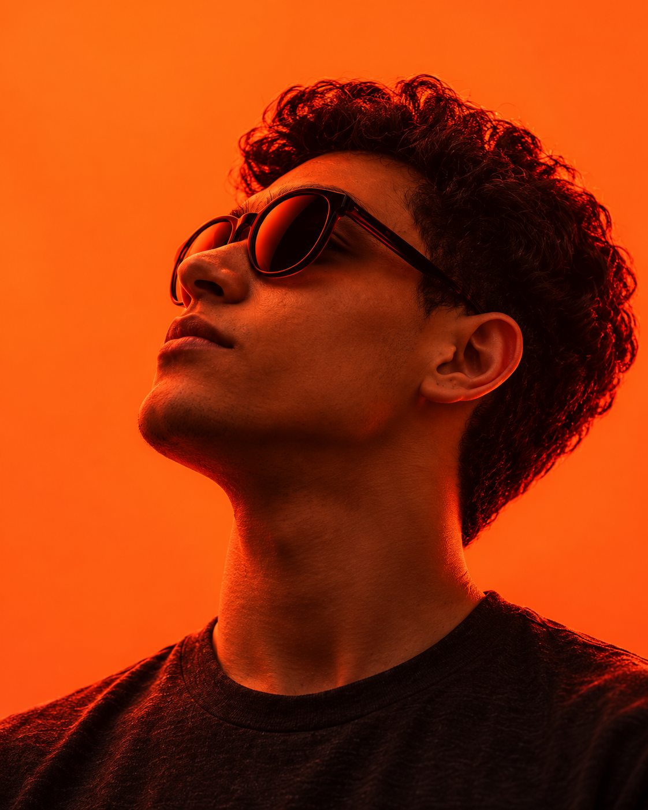

AI-POWERED PERSONAL BRANDINGSEEN FORUM / WORKSHOP
YOUR IDEAS. YOUR VOICE. AMPLIFIED.
CREATE MORE.STAYYOU.
Build a personal brand with AI.
Start with what makes you, you.
Muhammed MekkyArtist. Digital Problem Solver.
Strategist + Builder.
Strategist + Builder.
USE ← → TO EXPLORE